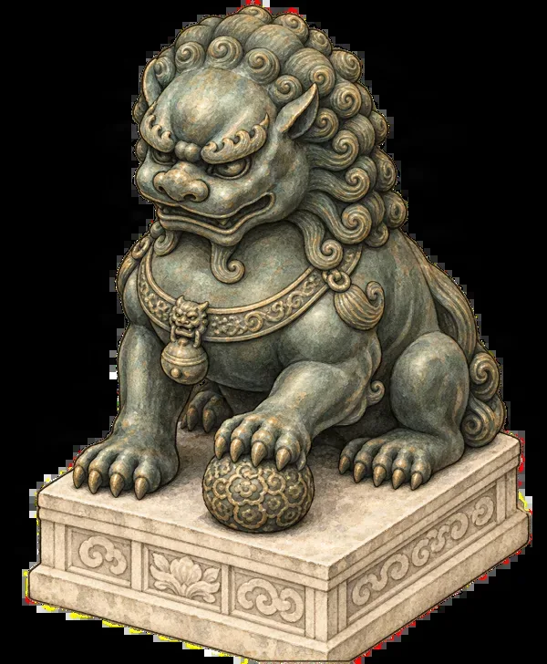

First time in Beijing · Beijing · printable
Chinese address cards for Beijing sights
Last checked:

How do I tell a taxi driver where to go in Beijing?
Show the name and address in Chinese characters: most Beijing drivers do not read English or pinyin. The cards below give each sight's gate in large characters with the full address underneath. Screenshot them or print this page (it prints one card per row), then point to the line you need.
Forbidden City
故宫 东华门
北京市东城区景山前街4号
Forbidden City, East Glorious Gate: nearest taxi drop-off; walk to the Meridian Gate entrance
天安门东 地铁站
地铁1号线
Tian'anmen East metro station: walk north through Tian'anmen to the entrance
故宫 神武门
北京市东城区景山前街4号
Forbidden City, Gate of Divine Might: north exit, for pick-up after your visit
The Meridian Gate (午门), the only entrance, is reached on foot along the moat; see entrance and exits.
Jingshan Park
景山公园 南门
北京市西城区景山西街44号
Jingshan Park, South Gate: opposite the Forbidden City's north exit
景山公园 东门
Jingshan Park, East Gate
Summer Palace
颐和园 东宫门
北京市海淀区新建宫门路19号
Summer Palace, East Palace Gate: the main gate
颐和园 北宫门
北京市海淀区新建宫门路19号
Summer Palace, North Palace Gate: closest to Suzhou Street and metro Line 4
颐和园 新建宫门
北京市海淀区新建宫门路19号
Summer Palace, New Palace Gate: east shore, near the Seventeen-Arch Bridge
Useful phrases
请带我去这里
Please take me here.
请在这里停车
Please stop here.
请打表
Please use the meter.
Do I need a card if I use DiDi?
Less often: you choose the destination in the app. Drivers still sometimes call or ask where exactly to stop, and the gate names here help. Pick the gate, not just the sight: the Summer Palace gates are far apart.
Are the cards in the app too?
Yes. Penyola's visitor information for each sight includes an address card in Chinese that you can show from your phone or save to your photos, offline. See also getting around Beijing without Google.
Beijing's imperial sights in detail
- The Forbidden City in half a day
- Forbidden City tickets for foreigners
- The Summer Palace in one day
- Jingshan Park: the best view of the Forbidden City